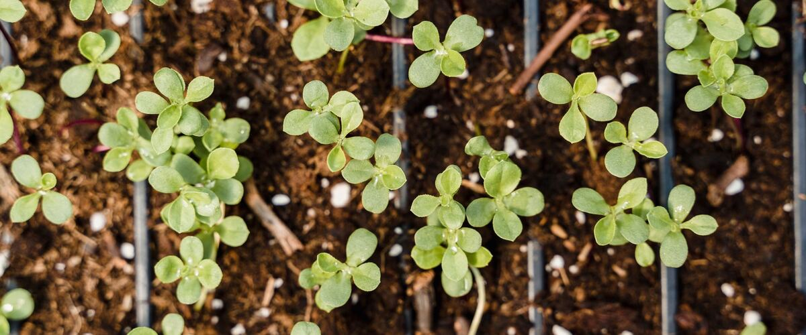

How to Harden Off Seedlings Before Planting Out
Seedlings raised indoors need a week or two to adjust to sun, wind and cool nights. Here's a simple day-by-day schedule that works in a Northwest spring.
Seedlings grown on a windowsill or under lights have lived an easy life: steady temperatures, no wind and gentle light. Move them straight into the garden and many will scorch, wilt or stall for weeks. Hardening off is the process of getting them used to outdoor conditions a little at a time.
What can go wrong if you skip it
- Sunscald. Leaves that have never seen direct sun can turn white or papery in a single afternoon.
- Wind damage. Soft stems bend, snap or dry out.
- Cold shock. Warm-season plants like tomatoes, peppers and basil stop growing for a while after a cold night, and can be badly set back.
A 7 to 10 day schedule
Start about a week to ten days before you plan to plant. Rainline Garden's window for planting tomatoes out in Portland is May 15 – Jun 12, so Portland gardeners would begin hardening off tomato seedlings in early May.
- Days 1 and 2: Set the seedlings outside for an hour or two in a shady spot out of the wind, then bring them back in.
- Days 3 and 4: Leave them out for half the day, with an hour or two of gentle morning sun.
- Days 5 and 6: Most of the day outside, with more sun each day.
- Day 7 onward: Full sun all day. If nights are mild enough for the crop (see below), leave them out overnight for a night or two before planting.
Overcast, mild days are ideal, and a Northwest spring usually has plenty. If a cold, windy or very wet day comes along, keep the seedlings in and pick up where you left off.
Watch the night temperatures
Cool-season seedlings like broccoli, cabbage, kale and lettuce tolerate cool nights and can go out earlier in spring. Warm-season seedlings like tomatoes, peppers, eggplant and basil are damaged by cold well above freezing, so bring them in on nights forecast to drop below about 50°F.
Tips
- Check water every day. Small pots dry out fast in sun and wind. Water when the top of the soil is dry, but don't keep them soggy.
- Use a tray or box. It makes moving dozens of pots in and out a one-trip job.
- Nursery starts need it too. Plants from a greenhouse are often just as tender as homegrown ones. Give them a few days of the same routine.
- Plant on a cloudy day or in the evening, and water well right after planting.
Seeds sown straight into the garden don't need hardening off; they grow up outdoors from the start. For when to start seeds indoors in the first place, see starting seeds indoors.